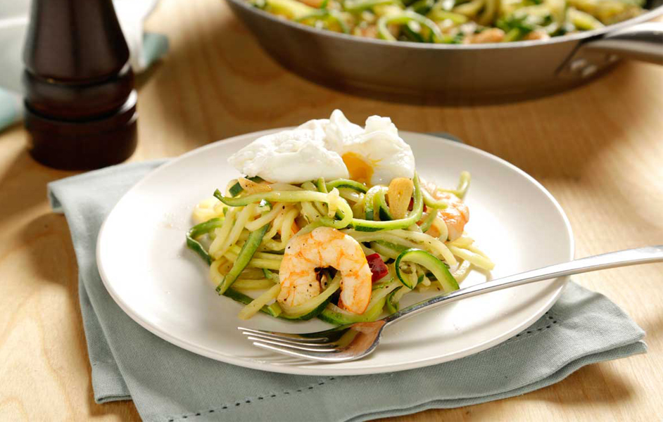
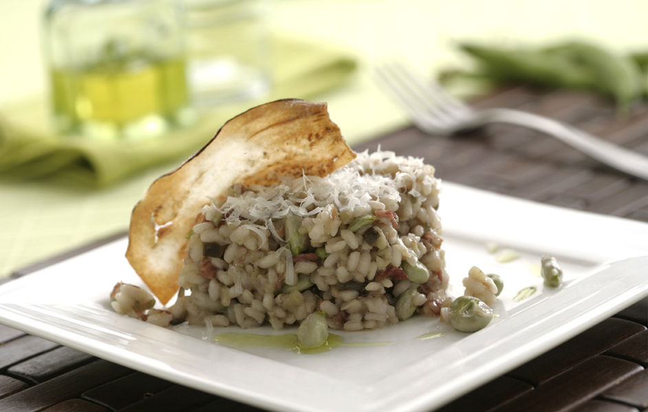
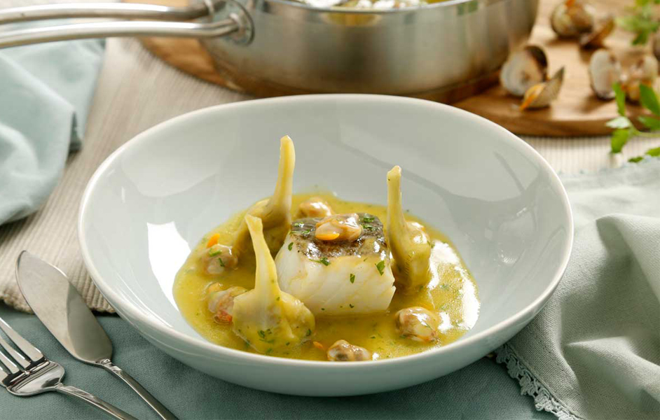
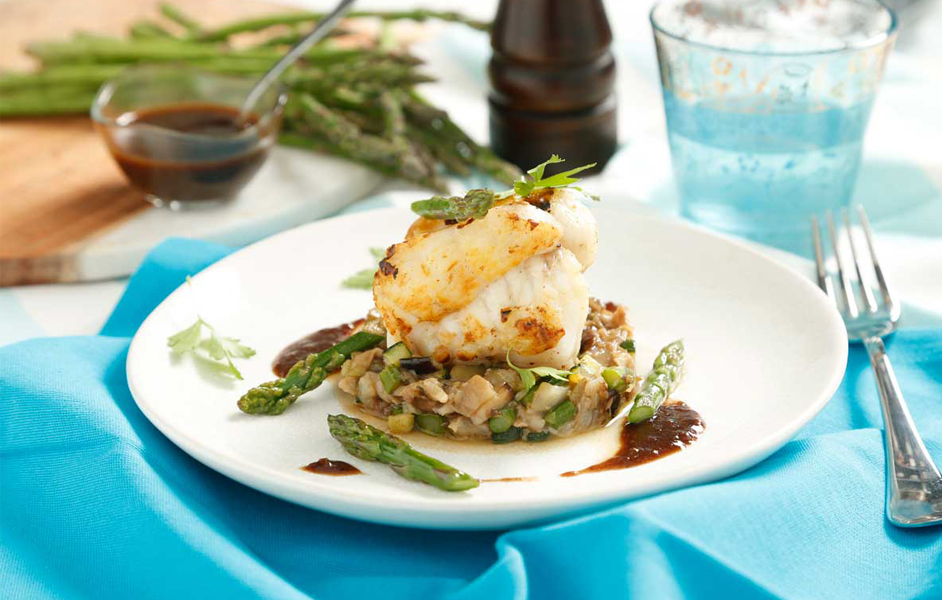
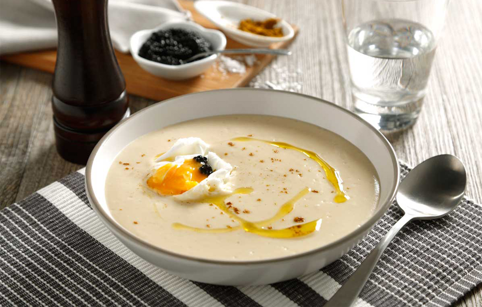

Suave crema artesanal de vainilla con un toque de canela y limón, coronada con galletas María tradicionales. El postre perfecto que combina cremosidad y dulzura.
$ 10.900

Salteado de espaguetis de calabacín con gambas
Deliciosos espaguetis de calabacín salteados con colas de langostino, ajo y guindilla, acompañados de un huevo escalfado. Una opción ligera, saludable y llena de sabor.
$ 40.000

Risotto de berenjenas, jamón y habas
Risotto cremoso con jamón serrano y habas frescas, acompañado de crujiente de berenjena y parmesano rallado.
$ 35.000

Bacalao confitado con berberechos y alcachofas
Suave bacalao confitado en aceite de oliva, acompañado de berberechos y alcachofas en una deliciosa salsa pil-pil con un toque de vino blanco y perejil. Un plato elegante y lleno de sabor.
$ 46.000
Arroz con Verduras
Paella de verduras con arroz redondo, judías verdes, espárragos, pimiento y alcachofas, realzada con un toque de ñora y ajo.
$ 30.000

Rape con ragout de verduras y manitas de cerdo
Paella de verduras con arroz redondo, judías verdes, espárragos, pimiento y alcachofas, realzada con un toque de ñora y ajo.
$ 26.000

Crema de coliflor
Suave y cremosa crema de coliflor con un toque de curry, servida con un huevo escalfado y huevas de pescado para un contraste de texturas y sabores únicos.
$ 30.000
Arroz de ibéricos al horno
Arroz meloso con secreto y chorizo ibérico, acompañado de setas, habas y ajetes, realzado con hierbas aromáticas para un sabor intenso y delicioso.
$ 38.000
Ossobuco a la milanesa
Clásico ossobuco a la milanesa, cocinado lentamente con verduras, vino blanco y hierbas aromáticas, acompañado de una fresca gremolata y arroz al azafrán.